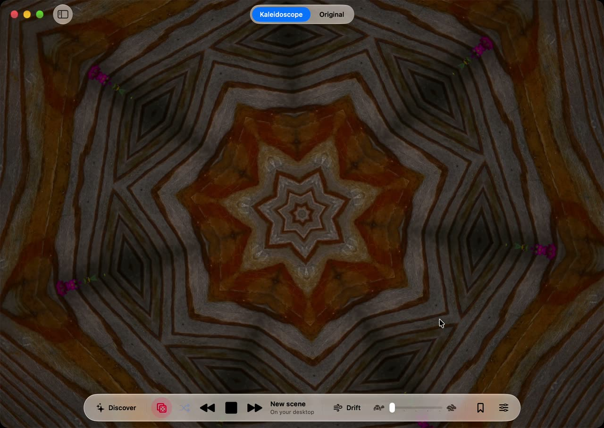
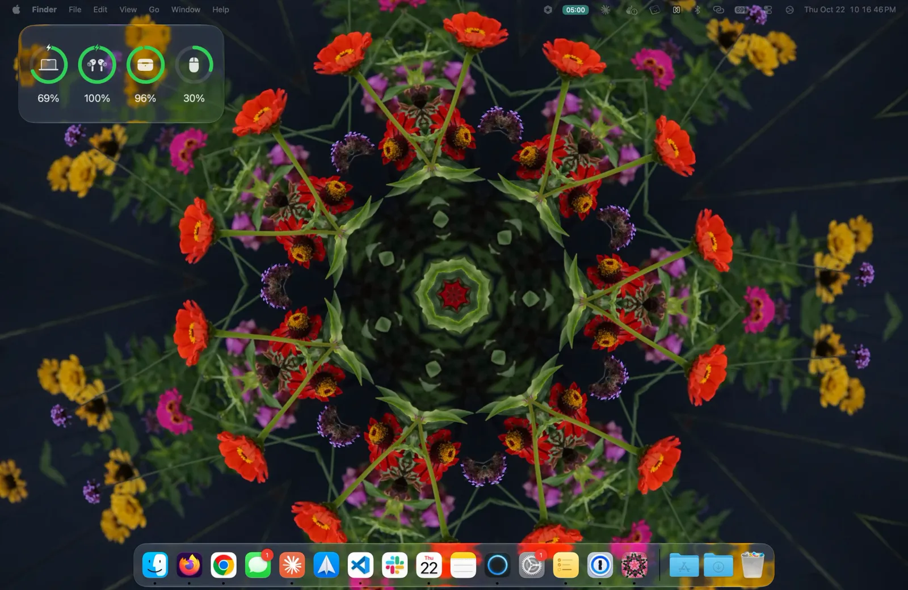
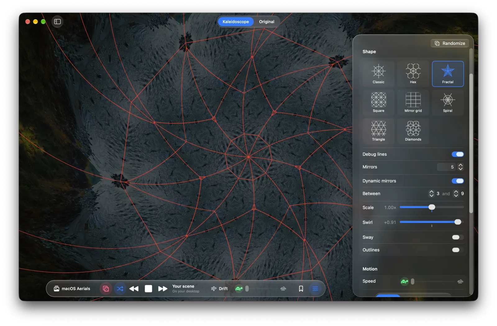
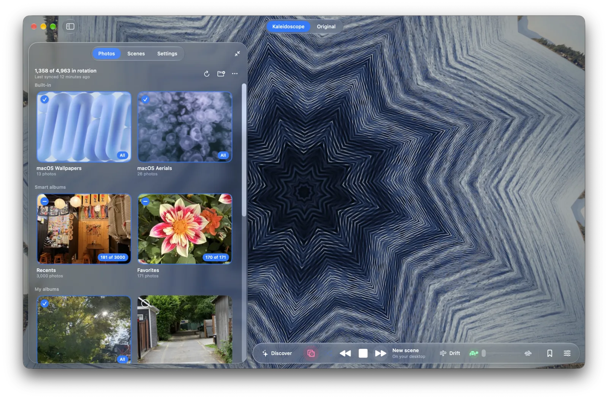

kaleido
Reimagine your photos. Turn them into a digital kaleidoscope wallpaper.

bring life to your photos


a new toy to play with
Flip through scenes, click and drag, flick and watch it glide.

liven your desktop
Press Play and the kaleidoscope fills your desktop, slowly turning behind your icons and windows. Press Stop and your usual wallpaper is back.

design your pattern
Have fun playing with the pattern editor. Many knobs and dials to tune. Or keep things random :)

pick what plays
Browse and choose your photos, built-in sets and smart albums to play.

keep the ones you love
Bookmark a scene to save the photo with its pattern. Star your favorites, then play your scenes as a playlist.